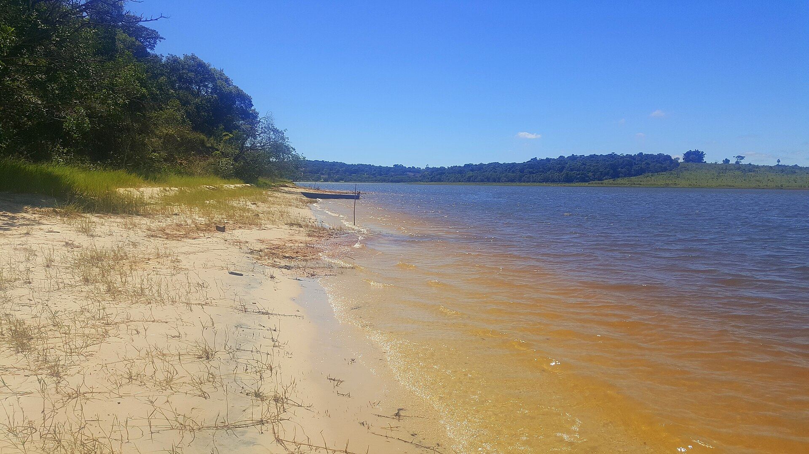

Proposta operacional · imagem ilustrativa
Frota completa rodando — ambulâncias reativadas, UTI móvel com equipe e motolância furando o trânsito.
O SAMU regional do Vale do Jurumirim já conquistou o difícil: uma central única, recém-requalificada pelo Ministério da Saúde, atendendo 17 cidades a partir de Avaré. Mas a operação roda no limite — uma única UTI móvel para toda a região, ambulâncias paradas por manutenção e escalas que deixam a viatura fora de serviço no descanso da equipe. Esta é a proposta da Samais para a AMVAPA: entregar a operação profissional completa desse SAMU, com equipe própria, frota rodando e tecnologia — em um único contrato transparente.
O SAMU 192 do Vale do Jurumirim é regional: uma única central de chamados, administrada pelo consórcio AMVAPA, atende 17 cidades e 312.109 habitantes. A central e a UTI móvel regional ficam em Avaré — a maior cidade e a maior demanda do bloco.
É para lá que vão as ligações 192 das 17 cidades — quem recebe o chamado e decide qual ambulância vai atender. A central é nova, funciona em prédio próprio da Prefeitura de Avaré e foi requalificada pelo Ministério da Saúde em abril de 2026.
Maior cidade e maior demanda da região, sede da central e da única UTI móvel. É também onde a operação mais aperta: das 3 ambulâncias da base, só 1 está em condições de rodar — e não há reserva.
Só Avaré declara R$ 491 mil por mês com o SAMU — e esse número já é parcial: manutenção na frota geral da Prefeitura, combustível na garagem municipal, médicos do município cedidos à central e à UTI móvel, insumos no almoxarifado compartilhado. Cada cidade do bloco carrega pedaços de custo que não aparecem somados. O resultado é uma operação que parece barata no papel e roda no limite na rua.
A regional já entregou o difícil: central única qualificada e cobertura de 17 cidades. Mas roda com uma só UTI móvel, ambulâncias paradas e equipes cobrindo buracos de escala — a estrutura chegou ao limite do que consegue sozinha.
Manutenção na frota geral, combustível na garagem municipal, médicos cedidos, insumos no almoxarifado compartilhado. E um serviço de urgência disputando fila de oficina com carros comuns — quando ambulância parada significa cidade descoberta.
A Samais assume toda a operação do SAMU regional: central de chamados, UTI móvel com equipe completa, ambulâncias de Avaré reativadas e rodando, motolância e treinamento contínuo — em um único contrato com custo aberto.

Na base de Avaré, das três ambulâncias, só uma está em condições de rodar — sem reserva. A UTI móvel é única para as 17 cidades. E o custo parece menor do que é porque está fragmentado: cada pedaço vive numa pasta diferente do orçamento.
| Unidade | Ano / modelo | Situação |
|---|---|---|
| USB 01 | 2012 · Peugeot Boxer | Parada |
| USB 02 | 2015 · Renault Master | Parada |
| USB 03 | 2024 · Renault Master | Operante |
| USA regional | Suporte avançado | Única para os 17 municípios |
| Regime de escala | 12×36 | Combustível 349,8 litros/mês |
Das três USB declaradas, apenas a Renault Master 2024 está operante. As de 2012 e 2015 estão paradas. Quando a única viatura está empenhada, Avaré fica sem cobertura própria de suporte básico.
A base reúne condutores socorristas, técnicos de enfermagem, enfermeiro, auxiliares de serviços gerais, técnica auxiliar de RM e um coordenador cedido — em escala 12×36.
A USB de Avaré realiza em média 152 atendimentos por mês (faixa 131–168). No período de referência, o perfil foi de maioria clínica, seguido de trauma, psiquiátrico e obstétrico.
| Equipe da base | Quantidade | Observação |
|---|---|---|
| Condutores socorristas | 6 | Escala 12×36 |
| Técnicos de enfermagem | 5 | Assistência direta |
| Enfermeiro | 1 | Carga de 30h |
| Auxiliares de serviços gerais | 2 | Apoio |
| Técnica auxiliar de RM | 1 | Apoio administrativo |
| Coordenador de base | 1 | Servidor cedido |
| Total na base | 16 | Obstétricas no período: 38 |
A fragilidade da operação atual aparece onde mais importa: na hora de chegar ao paciente grave. Frota insuficiente, suporte avançado único e falhas de regulação se somam — com um óbito já documentado pela própria Secretaria de Saúde.
Com uma única viatura operante e sem reserva, quando a USB de Avaré é empenhada o município fica sem cobertura própria de suporte básico até que ela se libere.
Um só suporte avançado para 17 municípios e 312 mil habitantes. Cada acionamento grave depende da disponibilidade dessa única unidade — impacto direto no tempo-resposta.
Com uma UTI móvel única e frota mínima, a central é forçada a escolhas impossíveis: casos graves sem viatura para liberar, com óbito já documentado pela SMS de Avaré. Não é falha das pessoas — é falta de estrutura.
| Custo oculto | Onde está hoje | Na proposta Samais |
|---|---|---|
| Manutenção da frota | Na fila da "frota geral" do município, junto com carros comuns | Oficina e fila dedicadas — urgência não espera |
| Combustível | Garagem da Prefeitura, sem conta separada | Linha própria, para a frota completa rodando |
| Médicos da central e da UTI móvel | Efetivos de Avaré cedidos + contratações avulsas do consórcio | Equipe médica própria, contratada e fixa |
| Insumos | Almoxarifado Central da saúde, compartilhado | Almoxarifado dedicado ao SAMU |
| Imóvel da central e da base | Água, luz, IPTU e manutenção pela Prefeitura | Permanece com o poder público (sem custo novo) |
| Coordenação | Servidor cedido, em outra pasta | Coordenação própria, dentro do contrato |
| Passivo trabalhista | TAC firmado com o MPT | Equipe 100% CLT elimina a causa do risco |
Uma proposta única: a Samais assume toda a operação do SAMU regional — a central de chamados (que segue no prédio da Prefeitura de Avaré, com nossa equipe e tecnologia), a UTI móvel com time completo contratado, as ambulâncias de Avaré reativadas e rodando com reserva, e uma motolância para resposta rápida. O consórcio mantém a governança; a Samais entrega a operação funcionando.
Médicos reguladores e da UTI móvel, enfermeiros, técnicos, condutores e atendentes — todos contratados, treinados e fixados, com a escala 24 horas coberta de verdade e treinamento contínuo (cursos e workshops) como compromisso de contrato.
As viaturas paradas passam por laudo técnico e voltam a rodar. Duas ambulâncias ativas mais reserva em Avaré, UTI móvel com equipe própria e motolância para resposta rápida — com manutenção, combustível e insumos dedicados, fora da fila geral.
A central segue no prédio público de Avaré — e ganha a operação Samais com o CoPilot: triagem apoiada por tecnologia, despacho otimizado, cada viatura rastreada em tempo real e painel aberto para o consórcio e as secretarias.

O valor abaixo é o total da operação regional — sem rubricas escondidas e sem custos espalhados pelas pastas de cada prefeitura. A verba federal que o serviço já recebe abate a conta do bloco, e o restante é rateado entre as cidades como o consórcio já faz hoje. Números de referência, a calibrar na diligência.
| Proposta única — operação regional completa | Referência |
|---|---|
| População atendida | 312.109 hab · 17 cidades |
| Escopo | central 24h + UTI móvel 24h + 2 ambulâncias + reserva + motolância |
| Equipe | ~70 profissionais CLT + treinamento contínuo |
| Valor da proposta (mensal) | R$ 2,0 mi |
| Valor da proposta (anual) | R$ 24 mi |
| Por morador da região, por mês | ~R$ 6,40 |
| (−) verba federal já existente | − R$ 159,6 mil/mês |
| Líquido para rateio entre as 17 cidades | ~R$ 1,84 mi/mês |
| Comparação honesta | Hoje | Com a proposta |
|---|---|---|
| Ambulâncias de Avaré em condições de rodar | 1 (sem reserva) | 2 + 1 reserva + motolância |
| UTI móvel regional | equipe improvisada (cedidos + avulsos) | equipe própria completa, 24h |
| Cobertura no descanso da equipe | viatura para | coberta |
| Manutenção e insumos | fila geral da Prefeitura | dedicados ao SAMU |
| Custo | espalhado, ninguém soma | um contrato, tudo dentro |
A diferença está em entregar a operação funcionando, com custo aberto e conformidade plena — não um relatório. Cada diferencial responde a um ponto crítico da operação atual de Avaré.
A Samais opera o serviço, não vende consultoria. O custo é aberto linha a linha, sem rubricas escondidas — o gestor enxerga cada item do que paga.
Regulação, despacho e telemetria em plataforma própria, com rastreabilidade em tempo real — atacando diretamente as falhas de regulação que hoje custam vidas.
Equipe CLT no piso, com fim dos passivos trabalhistas, e Núcleo de Educação Permanente estruturado (NR-32, SAVC). Autonomia municipal sobre o próprio serviço.
Reunião técnica com a governança do consórcio para dimensionar a operação ao dado real — frota, bases, equipe e demanda das 17 cidades.
Validação dos custos ocultos — manutenção, combustível, imóvel e coordenação — isolando o gasto real do SAMU.
Definição do modelo de contratação no âmbito do consórcio — Lei 14.133/2021 — conforme deliberação da assembleia da AMVAPA.
Consolidação de documentos: portarias, produção de 12 meses, folha, contrato AMVAPA, repasses e CCT.
| Interlocução · portas de entrada | Referência | Status |
|---|---|---|
| AMVAPA · Presidência | José Ramiro — prefeito de Itaí (eleito 01/2025) | ✓ |
| AMVAPA · Consórcio | (14) 3351-1358 · contato@amvapa.com.br · Piraju/SP | ✓ |
| Avaré · SMS / Planejamento | Rodrigo Silvestre — respondeu o levantamento oficial (21/05/2026) | ✓ |
| Avaré · Prefeitura | Prefeito(a) e Secretário(a) de Saúde — cidade-sede, maior cotista | ⚠ |
Dezessete cidades, uma central, um padrão — e o socorro que chega a tempo.
Transparência metodológica: separamos o dado público e oficial verificável da estimativa de modelagem, a confirmar em diligência.
Frota inteira rodando, UTI móvel com equipe completa dia e noite, central potencializada e um único contrato com o custo todo aberto — calibrado ao dado real do consórcio em diligência de campo.